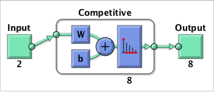
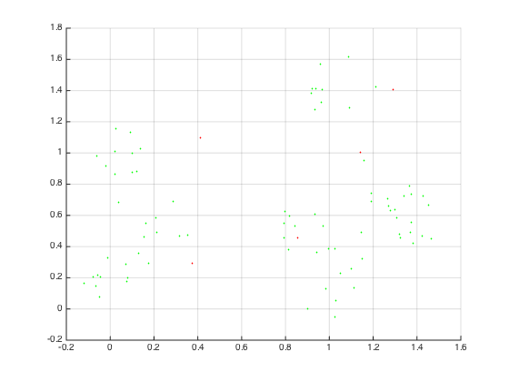

Contents
PART 1
clear;
clc;
X = [0 1.5;
0 1.5];
clusters = 8;
points = 10;
deviation = 0.1;
P = nngenc(X, clusters, points, deviation);
figure;
hold on;
grid on;
scatter(P(1, :), P(2, :), 5, [0 1 0], 'filled');
net = competlayer(8);
net = configure(net, P);
view(net);
net.divideFcn = '';
net.trainParam.epochs = 50;
net = train(net, P);
R = zeros(2, 5) + 1.5 * rand(2, 5);
res = vec2ind(sim(net, R));
figure;
hold on;
grid on;
scatter(P(1, :), P(2, :), 5, [0 1 0], 'filled');
scatter(R(1, :), R(2, :), 5, [1 0 0], 'filled');
 
PART 2
X = [0 1.5;
0 1.5];
clusters = 8;
points = 10;
deviation = 0.1;
P = nngenc(X, clusters, points, deviation);
net = newsom(X, [2 4]);
net = configure(net, X);
plotsomhits(net,P);
figure
plotsompos(net,P);
net = selforgmap([2 4], 'topologyFcn','hextop','distanceFcn','linkdist');
net = configure(net, X);
view(net);
net.divideFcn = '';
net.inputWeights{1,1}.learnParam.init_neighborhood = 3;
net.inputWeights{1,1}.learnParam.steps = 100;
net.trainParam.epochs = 150;
net = train(net, P);
R = zeros(2, 5) + 1.5 * rand(2, 5);
res = vec2ind(sim(net, R));
figure;
hold on;
grid on;
scatter(P(1, :), P(2, :), 5, [0 1 0], 'filled');
scatter(net.IW{1}(:, 1), net.IW{1}(:, 2), 5, [0 0 1], 'filled');
scatter(R(1, :), R(2, :), 5, [1 0 0], 'filled');
plotsom(net.IW{1, 1}, net.layers{1}.distances);
PART 3
N = 20;
T = -1.5 * ones(2, N) + 3 * rand(2, N);
figure;
hold on;
grid on;
plot(T(1,:), T(2,:), '-V', 'MarkerEdgeColor', 'k', 'MarkerFaceColor', 'g', 'MarkerSize', 7);
net = newsom(T, N);
net = configure(net, T);
view(net);
net.divideFcn = '';
net.trainParam.epochs = 600;
net = train(net, T);
figure;
hold on;
grid on;
plotsom(net.IW{1,1}, net.layers{1}.distances);
plot(T(1,:), T(2,:), 'V', 'MarkerEdgeColor', 'k', 'MarkerFaceColor', 'g', 'MarkerSize', 7);
PART 4
P = [-0.3 -0.3 -1.1 -1.1 1.1 0.5 0 0.2 -0.7 -0.3 0.1 -0.3;
1.4 0.3 -0.4 0.7 -0.5 -0.7 0.9 -0.5 -0.2 -0.5 0.7 -0.3];
T = [1 1 1 1 1 1 1 1 -1 -1 1 -1];
plotpv(P, max(0, T));

Ti = T;
Ti(Ti == 1) = 2;
Ti(Ti == -1) = 1;
Ti = ind2vec(Ti);
net = lvqnet(12, 0.1);
net = configure(net, P, Ti);
view(net)
net.IW{1,1}
net.LW{2,1}
net.trainParam.epochs = 300;
net = train(net, P, Ti);
[X,Y] = meshgrid([-1.5 : 0.1 : 1.5], [-1.5 : 0.1 : 1.5]);
res = sim(net, [X(:)'; Y(:)']);
res = vec2ind(res) - 1;
figure;
plotpv([X(:)'; Y(:)'], res);
point = findobj(gca,'type','line');
set(point,'Color','g');
hold on;
plotpv(P, max(0, T));
ans =
0 0.3500
0 0.3500
0 0.3500
0 0.3500
0 0.3500
0 0.3500
0 0.3500
0 0.3500
0 0.3500
0 0.3500
0 0.3500
0 0.3500
ans =
1 1 1 0 0 0 0 0 0 0 0 0
0 0 0 1 1 1 1 1 1 1 1 1